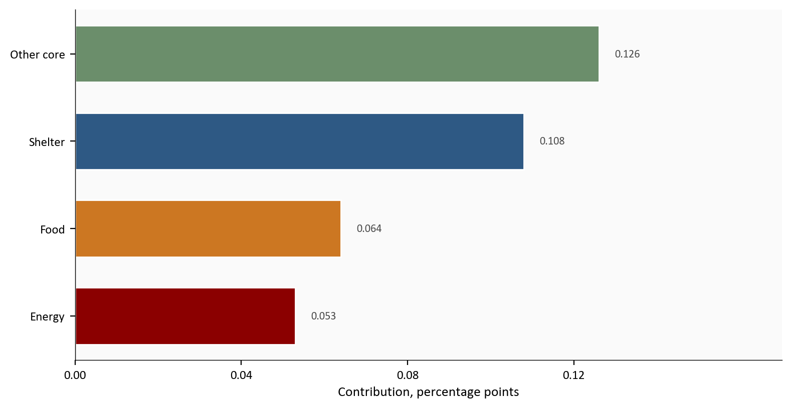
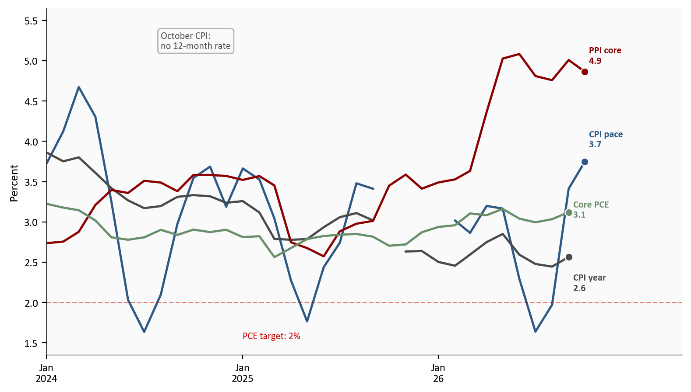
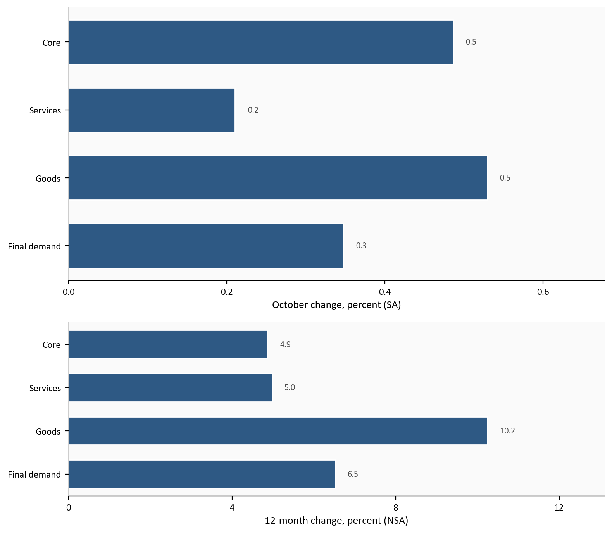
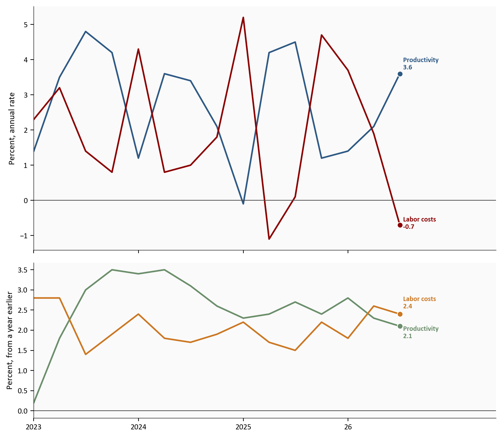

CPI, month
+0.4%
October 26
Core CPI, month
+0.3%
October 26
PPI final demand, 12-month
+6.5%
October 26
Productivity, quarterly
+3.6%
Third quarter, annual rate
Latest CPI and PPI month: October 26 | Sources: BLS CPI and PPI
Yoram Gilboa
November 14, 2026
Consumer prices rose 0.4% in October 26, with increases across food, energy, shelter, and other core categories. Core prices, which exclude food and energy, rose 0.3%. Those monthly readings remain available even though the official annual comparison is missing.
The consumer price index, or CPI, measures prices urban households pay. A 12-month change compares this month with the same month a year earlier. The Bureau of Labor Statistics did not collect survey prices in October 2025 during a lapse in appropriations, leaving that CPI base missing. Producer prices still have an annual comparison: final demand rose 6.5% over the year. Meanwhile, third-quarter productivity rose 3.6% at an annual rate and unit labor costs fell 0.7%. Together, the releases show current price pressure and some quarterly labor-cost relief, not a complete annual consumer-inflation reading.
The Python code used to generate each chart is included in this post. Click on any code block to see the full implementation. The complete data pipeline includes:
01_fetch_data.py fetches the release vintages from FRED and keeps the transcribed BLS table02_clean_data.py computes month-to-month changes, 12-month changes, and the three-month pace04_compute_stats.py writes the figures quoted in the textCPI uses the 11/10/26 vintage. PPI uses 11/13/26. Productivity uses 11/5/26. The PCE price index uses the 10/29/26 vintage and stops in September. Earnings use the 11/6/26 employment report. The default command checks the saved files and does not download a new copy.
CPI survey prices for October 2025 were not collected. The missing base prevents an official 12-month comparison for October 26. The charts leave that rate empty. A three-month pace is shown only when all four consecutive monthly index levels are present, so it also stays empty for windows crossing the gap. PPI indexes and the third-quarter productivity estimate are preliminary.
Latest CPI and PPI month: October 26 | Sources: BLS CPI and PPI
A contribution is the piece of the all-items change that one category accounts for. BLS publishes it as an effect, in percentage points. Energy prices rose 0.7%, for example, but contributed 0.053 percentage point to the CPI increase.
The bars show shelter, food, energy, and other core categories. “Other core” is the core contribution after subtracting shelter. It bundles many categories; it is not one product. This division avoids counting shelter twice.
# Four contributions from the BLS one-month table.
# Core excluding shelter keeps shelter from being counted twice.
bars = pd.read_csv(CLEAN_DIR / "cpi_contributions.csv").sort_values("effect_pp", ascending=False)
bars["component"] = bars["component"].replace({"Core excluding shelter": "Other core"})
colors = [COLORS["secondary"], COLORS["primary"], COLORS["warning"], COLORS["accent"]]
fig, ax = plt.subplots(figsize=(8.0, 4.2))
ax.barh(bars["component"], bars["effect_pp"], color=colors, edgecolor="white", height=0.65)
ax.axvline(0, color=COLORS["neutral"], linewidth=0.8)
for name, value in zip(bars["component"], bars["effect_pp"]):
ax.text(value + bars["effect_pp"].max() * 0.03, name, f"{value:.3f}", fontsize=8, color=COLORS["neutral"], va="center")
ax.invert_yaxis()
ax.set_xlabel("Contribution, percentage points")
ax.set_xticks([0, 0.04, 0.08, 0.12])
ax.set_xlim(0, bars["effect_pp"].max() * 1.35)
plt.tight_layout()
fig.savefig(IMG_DIR / "cpi-contributions.png", dpi=150, bbox_inches="tight")
Source: BLS CPI news release, 11/10/26, Table 6.
Shelter prices rose 0.3%. Shelter includes rent, owners’ equivalent rent, and smaller components such as lodging away from home. Owners’ equivalent rent estimates what a homeowner would pay to rent their home. Rent rose 0.2%, and owners’ equivalent rent rose 0.3%.
Shelter’s 0.108 percentage-point contribution accounts for 30.8% of the unrounded CPI increase, but only 27.0% if divided by the rounded 0.4% print. The unrounded denominator explains BLS’s description of shelter as accounting for over thirty percent of the increase.1
Food prices rose 0.5%, with groceries up 0.4% and food away from home up 0.5%. Energy rose 0.7% after September’s 5.2% increase. The headline monthly CPI change slowed from 0.6% in September, but price increases were not confined to energy.
Gasoline rose 1.0% after seasonal adjustment and fell 0.7% before adjustment. Seasonal adjustment removes the usual calendar pattern. These are adjusted and unadjusted readings of the same price series, not conflicting observations.
September has a 12-month CPI rate of 3.7% for all items and 2.6% for core. October does not. The gray core CPI 12-month line therefore ends in September. Its earlier break marks the missing October 2025 index itself.
The blue core CPI three-month pace annualizes three consecutive monthly changes. October’s 3.7% pace uses July’s index as the starting level and the August, September, and October changes. It does not reconstruct the missing annual comparison. Windows crossing the missing index stay empty; the blue line resumes only when four consecutive levels are available. The headline three-month pace, not drawn, is 5.7%, with September’s large energy increase still in the window.
The red line is the 12-month change in core producer prices, excluding foods, energy, and trade services. It reaches 4.9% in October. The green line is core PCE, the personal consumption expenditures price index excluding food and energy. It measures consumer prices through the national accounts and ends at 3.1% in September. The dashed reference is the Fed’s 2% longer-run target for headline PCE inflation, not a target for every line.
# Cleaned rates only. A missing month stays a break in the line.
start = pd.Timestamp("2024-01-01")
end = pd.Timestamp("2026-10-01")
cpi = pd.read_csv(CLEAN_DIR / "cpi_monthly.csv", index_col="date", parse_dates=True).loc[start:end]
ppi = pd.read_csv(CLEAN_DIR / "ppi_monthly.csv", index_col="date", parse_dates=True).loc[start:end]
pce = pd.read_csv(CLEAN_DIR / "pce_monthly.csv", index_col="date", parse_dates=True).loc[start:end]
series = [
(cpi["cpi_core_ann3"], "CPI pace", COLORS["primary"], 0.28),
(cpi["cpi_core_yoy"], "CPI year", COLORS["neutral"], -0.32),
(ppi["ppi_core_yoy"], "PPI core", COLORS["accent"], 0.20),
(pce["core_pce_yoy"], "Core PCE", COLORS["secondary"], 0.03),
]
fig, ax = plt.subplots(figsize=(8.0, 4.6))
for values, name, color, nudge in series:
ax.plot(values.index, values, color=color, linewidth=1.8)
last = values.dropna()
x_end = last.index[-1]
y_end = float(last.iloc[-1])
ax.scatter(x_end, y_end, s=40, color=color, zorder=5, edgecolors="white", linewidth=0.8)
ax.text(x_end, y_end + nudge, f" {name}\n {y_end:.1f}", color=color, fontsize=8, fontweight="bold", va="center")
ax.axhline(2, color=COLORS["fed_target"], linestyle="--", linewidth=1, alpha=0.5)
ax.text(pd.Timestamp("2025-01-01"), 1.55, "PCE target: 2%", color=COLORS["fed_target"], fontsize=8)
# No arrow. An arrow toward the last gray point reads as a label on that rate.
ax.text(
pd.Timestamp("2024-08-01"),
5.15,
"October CPI:\nno 12-month rate",
fontsize=8,
color=COLORS["neutral"],
zorder=5,
bbox={"boxstyle": "round,pad=0.3", "facecolor": "#fafafa", "edgecolor": COLORS["light"], "alpha": 0.95},
)
ax.set_xlim(start, pd.Timestamp("2027-04-01"))
ax.set_ylim(1.35, 5.65)
ax.set_ylabel("Percent")
ax.set_xticks(pd.to_datetime(["2024-01-01", "2025-01-01", "2026-01-01"]))
def short_tick(value, _pos):
stamp = mdates.num2date(value)
year = "26" if stamp.year == 2026 else str(stamp.year)
return stamp.strftime("%b\n") + year
ax.xaxis.set_major_formatter(plt.FuncFormatter(short_tick))
plt.tight_layout()
fig.savefig(IMG_DIR / "inflation-paths.png", dpi=150, bbox_inches="tight")
Source: FRED CPI vintage 11/10/26, FRED PPI vintage 11/13/26, and FRED PCE vintage 10/29/26. The October 26 CPI 12-month rate is omitted because BLS did not publish it.
September PCE, released 10/29/26, rose 0.5% on the month and 3.6% over the year. Core PCE rose 0.3% on the month, with its annual rate edging up from August’s 3.0% to 3.1%. October PCE is not yet released, so the green line cannot describe October consumer prices.
The producer price index, or PPI, measures prices producers receive. Final demand covers goods, services, and construction sold to the final buyer. It rose 0.3% in October, with goods up 0.5% and services up 0.2%. The core measure here excludes foods, energy, and trade services, meaning wholesaler and retailer margins. It rose 0.5%.
The annual picture is stronger: final demand rose 6.5%, goods 10.2%, services 5.0%, and core 4.9%. The top panel shows seasonally adjusted monthly changes. The bottom shows unadjusted 12-month changes, with the same category order and a different scale.
# One October row. The month is seasonally adjusted. The year is not.
ppi = pd.read_csv(CLEAN_DIR / "ppi_monthly.csv", index_col="date", parse_dates=True)
row = ppi.loc[pd.Timestamp("2026-10-01")]
labels = ["Final demand", "Goods", "Services", "Core"]
mom_cols = ["ppi_mom", "ppi_goods_mom", "ppi_services_mom", "ppi_core_mom"]
yoy_cols = ["ppi_yoy", "ppi_goods_yoy", "ppi_services_yoy", "ppi_core_yoy"]
mom = [float(row[col]) for col in mom_cols]
yoy = [float(row[col]) for col in yoy_cols]
fig, axes = plt.subplots(2, 1, figsize=(8.0, 7.0), gridspec_kw={"height_ratios": [2.2, 1.4]})
for axis, values, title in (
(axes[0], mom, "October change, percent (SA)"),
(axes[1], yoy, "12-month change, percent (NSA)"),
):
axis.barh(labels, values, color=COLORS["primary"], edgecolor="white", height=0.65)
axis.axvline(0, color=COLORS["neutral"], linewidth=0.8)
for name, value in zip(labels, values):
axis.text(value + max(values) * 0.03, name, f"{value:.1f}", fontsize=8, color=COLORS["neutral"], va="center")
axis.set_xlabel(title)
axis.set_xlim(0, max(values) * 1.28)
axes[0].set_xticks([0, 0.2, 0.4, 0.6])
axes[1].set_xticks([0, 4, 8, 12])
plt.tight_layout()
fig.savefig(IMG_DIR / "ppi-month-year.png", dpi=150, bbox_inches="tight")
Source: BLS PPI news release, 11/13/26. Twelve-month rates use the not-seasonally-adjusted indexes.
Inside goods, foods rose 1.3%, energy fell 0.1%, and goods excluding food and energy rose 0.5%. The release revised September’s final-demand increase from 1.3% to 1.4%.
CPI and PPI both rose in October, but they cover different buyers and price baskets. Their shared timing does not establish a fixed producer-to-consumer pass-through.
Labor productivity is output per hour in the nonfarm business sector. Unit labor costs are hourly compensation divided by productivity. Stronger productivity can therefore offset rising compensation.
In the third quarter, output rose 3.7% while hours rose 0.1%, both at annual rates. Productivity consequently rose 3.6%. It outpaced hourly compensation growth of 2.9%, leaving unit labor costs down 0.7%. These figures annualize the quarter’s change; they are not year-over-year growth.
Over four quarters, productivity rose 2.1% and hourly compensation rose 4.5%, leaving unit labor costs up 2.4%. The latest quarterly decline is relief, but it does not erase the annual increase.
The top panel shows quarterly annual rates: blue productivity and red unit labor costs. The bottom shows four-quarter changes: green productivity and orange unit labor costs. The endpoint label “Labor costs” means unit labor costs. October average hourly earnings come from a different survey and period; they are not plotted.
# Top panel: quarterly annual rates. Bottom panel: change from a year earlier.
start = pd.Timestamp("2023-01-01")
prod = pd.read_csv(CLEAN_DIR / "productivity_quarterly.csv", index_col="date", parse_dates=True).loc[start:]
fig, axes = plt.subplots(2, 1, figsize=(8.0, 7.0), sharex=True, gridspec_kw={"height_ratios": [2.2, 1.4]})
top_lines = [
(prod["prod_q_ann"], "Productivity", COLORS["primary"], 0.28),
(prod["ulc_q_ann"], "Labor costs", COLORS["accent"], 0.05),
]
for values, name, color, nudge in top_lines:
axes[0].plot(values.index, values, color=color, linewidth=1.8)
x_end, y_end = values.index[-1], float(values.iloc[-1])
axes[0].scatter(x_end, y_end, s=40, color=color, zorder=5, edgecolors="white", linewidth=0.8)
axes[0].text(x_end, y_end + nudge, f" {name}\n {y_end:.1f}", color=color, fontsize=8, fontweight="bold", va="center")
axes[0].axhline(0, color=COLORS["neutral"], linewidth=0.8)
axes[0].set_ylabel("Percent, annual rate")
bottom_lines = [
(prod["prod_yoy"], "Productivity", COLORS["secondary"], -0.16),
(prod["ulc_yoy"], "Labor costs", COLORS["warning"], 0.28),
]
for values, name, color, nudge in bottom_lines:
axes[1].plot(values.index, values, color=color, linewidth=1.8)
x_end, y_end = values.index[-1], float(values.iloc[-1])
axes[1].scatter(x_end, y_end, s=40, color=color, zorder=5, edgecolors="white", linewidth=0.8)
axes[1].text(x_end, y_end + nudge, f" {name}\n {y_end:.1f}", color=color, fontsize=8, fontweight="bold", va="center")
axes[1].axhline(0, color=COLORS["neutral"], linewidth=0.8)
axes[1].set_ylabel("Percent, from a year earlier")
def short_year_tick(value, _pos):
year = mdates.num2date(value).year
return "26" if year == 2026 else str(year)
axes[1].xaxis.set_major_formatter(plt.FuncFormatter(short_year_tick))
for axis in axes:
axis.set_xlim(prod.index[0], pd.Timestamp("2027-06-01"))
axis.set_xticks(pd.to_datetime(["2023-01-01", "2024-01-01", "2025-01-01", "2026-01-01"]))
plt.tight_layout()
fig.savefig(IMG_DIR / "productivity-costs.png", dpi=150, bbox_inches="tight")
Source: BLS Productivity and Costs, third quarter 26 preliminary, 11/5/26.
These estimates are preliminary. A later national-accounts estimate can revise output and therefore productivity. The next GDP estimate is scheduled for 11/25/26; revised productivity follows on 12/8/26.
October consumer prices rose across several categories. The missing year-earlier CPI base limits the annual comparison, not the monthly evidence. Producer prices have an elevated annual increase. Productivity reduced unit labor costs in the latest quarter, although those costs still rose over four quarters. The useful connection is current price pressure alongside quarterly cost relief, with incomplete annual consumer evidence.
For the Fed. The funds target range is 3.75 to 4.00%. September’s median year-end projection is 4.1% for the target-range midpoint. That is a conditional projection of appropriate policy, not a December commitment. The Committee still has October PCE and a productivity revision to consider before completing its next meeting.
For households. Average hourly earnings rose 3.1% over the year and 0.4% in October, to 38.00 dollars. These are averages for private payroll employees, not every household’s pay. Subtracting inflation approximately estimates real-wage growth; the exact calculation divides the wage growth factor by the price growth factor. Without October’s official annual CPI rate, this post cannot make that annual purchasing-power comparison.
For investors. The 3.7% core CPI pace captures recent momentum, while 4.9% core PPI captures a year of producer-price change. Neither supplies the missing annual consumer rate. Watch whether forthcoming consumer data confirm persistent pressure, rather than treating one monthly print as a policy forecast.
October retail sales are not yet released and scheduled for 11/17/26. The late-October meeting minutes follow on 11/18/26. October PCE and the second GDP estimate are scheduled for 11/25/26. The productivity revision arrives on 12/8/26, when the next policy meeting begins; that meeting ends on 12/9/26. November CPI follows on 12/10/26. Check which annual rates BLS publishes rather than assuming the next release resolves the gap.
This post does not reconstruct the missing CPI base or estimate its effects on the survey. Shelter contributions are the published BLS effects, not independently estimated weights. PPI can be revised for several months, and productivity depends on output estimates that can also change. The CPI, PPI, PCE, earnings, and productivity measures differ in coverage and timing; their comparison does not establish causation.
| Series | What it measures | Source |
|---|---|---|
| CPI, all items and core | Consumer prices, month and the September 12-month rate | BLS CPI, 11/10/26. FRED: CPIAUCSL, CPIAUCNS, CPILFESL, CPILFENS. |
| CPI contributions | Effect of food, energy, shelter, and core on the October month | BLS Table 6. |
| Why the CPI annual is missing | October 2025 survey prices were not collected | BLS notice. |
| PPI final demand and core | Producer prices, month and 12-month rate | BLS PPI, 11/13/26. FRED: PPIFIS, PPIFID, WPSFD49116, WPUFD49116. |
| Productivity and unit labor costs | Nonfarm business, quarterly annual rate and four-quarter change | BLS Productivity and Costs. FRED: PRS85006092, PRS85006091, PRS85006112, PRS85006111. |
| PCE prices | September headline and core, the latest published month | BEA Personal Income and Outlays, September 26. FRED: PCEPI, PCEPILFE. |
| Average hourly earnings | October pay for all private employees | BLS Employment Situation, 11/6/26. FRED: CES0500000003. |
| Federal funds target | Last available daily reading in each month; September year-end projection | FRED: DFEDTARU, DFEDTARL. September projections and meeting calendar. |
Data current as of 11/13/26. CPI released 11/10/26. PPI released 11/13/26. October PCE is not yet released.
Food, energy, and core effects sum to 0.351 percentage point. The all-items index change is approximately 0.350% before rounding. Effects and index changes are published at different precision, so the reconciliation is approximate.↩︎